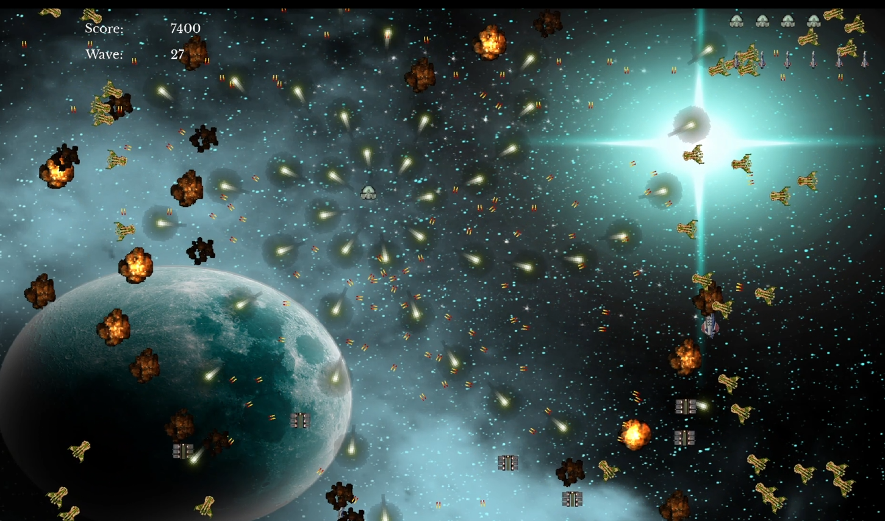
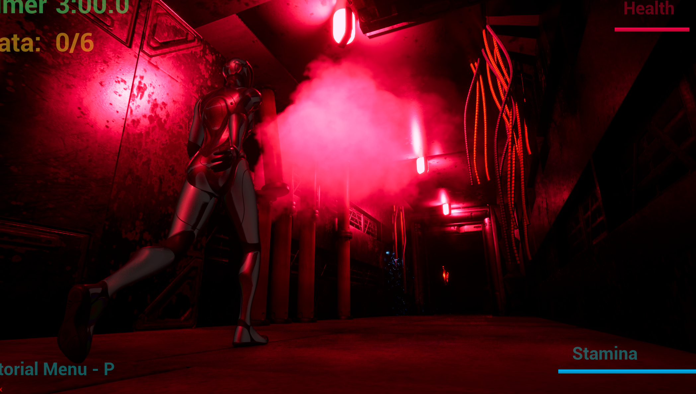
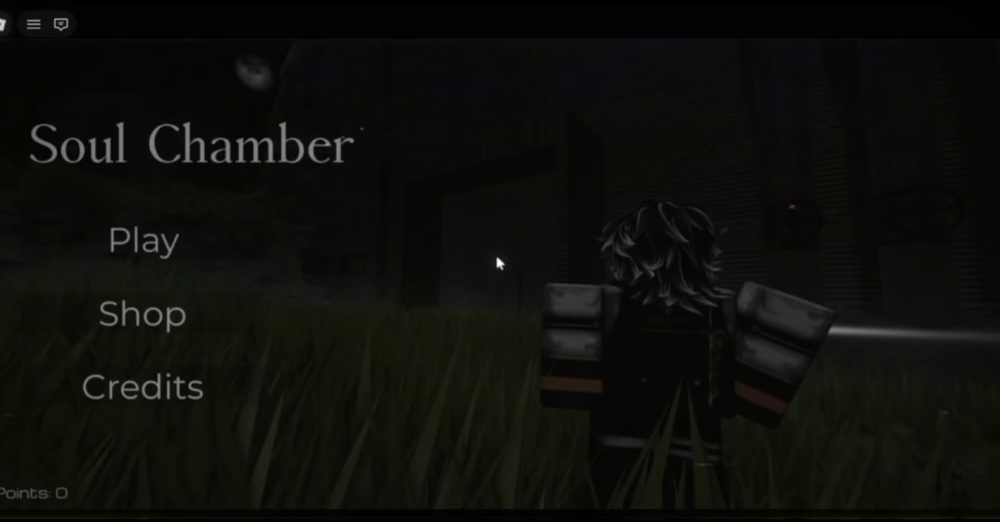
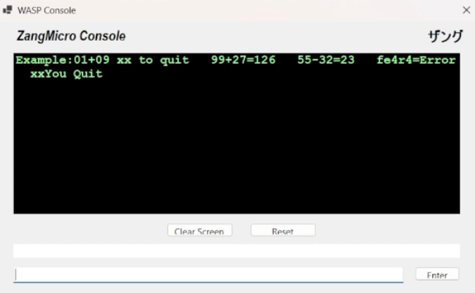
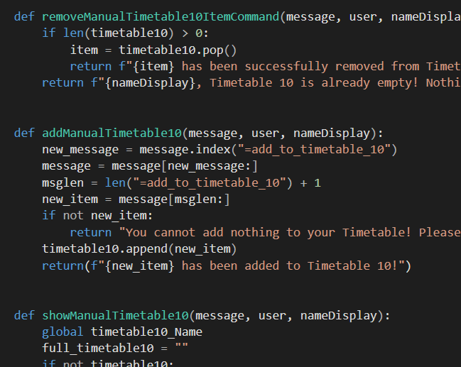

Shea Turner
Games Programmer & Software Developer
A current undergraduate from
Northumbria University with Unreal Engine, C++, gameplay and software system
experience with a diverse background in software engineering, project management, game creation and software development.
Open to games, software, and interactive media roles across the UK and Western Europe.
Languages
About Me
Games. That's the catalyst that sparked my passion for programming and software development.
From a young age most of my free time was spent on them, and as the years went on that passion evolved. From playing,
to understanding how they worked, to wanting to build my own. A friend showed me raw code and I immediately knew that's what I wanted to do.
I quit my electrical apprenticeship, went to college, then Northumbria to pursue it.
Since then I've worked across low-level Assembly, C++ game systems, Unreal Engine, 2D engines, file parsing/reading and more.
I enjoy understanding how systems run at a deeper level, never settling for a solution that just works when one that works well is within reach.
That instinct for quality isn't personal preference, it's what separates a good game / software from a great one.
My skillset doesn't stop at games. The low-level thinking, system design, and code quality standards that game development demands are equally at home in a software engineering context.
Projects
Factor-5
A 2D arcade space shooter built in C++ inspired by Galaga. Features escalating enemy behaviour across difficulty tiers, a missile targeting system, power-ups, unique bullet patterns, and an event-driven architecture handling collision, targeting, and game state.

Project Survive
A fast paced first person roguelike shooter made in Unreal Engine 5. Players must survive waves of enemies whilst collecting power ups and upgrades to reach the final boss.
First Blood
A 3D third-person horror mini game built in Unreal Engine 5, designed as a standalone experience within a shared multiplayer meta game. Collect data points against the clock while avoiding a proximity-triggered monster.

Soul Chamber
A Roblox horror survival prototype built in Luau. Players evade roaming monsters across a custom built map, with sprint, flashlight and health mechanics, a points system, and a full menu screen.

Additional Projects
Other projects I have completed.

Assembly Calculator
A low-level assembly calculator that had basic addition, subtraction abilities with error handling and a quit function.

Discord Bot
A Discord bot that would function as a personal timetable keeper with extra features. (Due to circumstances, the bot was taken down after the academic year, so a live demo isn't available.)

File Reader
A config-driven level loader for the Hornet engine. It parses a CSV file and dynamically spawns the player, enemies, pickups, and background based on that data, so designers can edit levels without touching the C++ code.
CV
Full CV available as a PDF. Covers my education at Northumbria University, project work, technical skills, and any industry experience.
↓ Download CVContact
Open to opportunities — feel free to reach out.